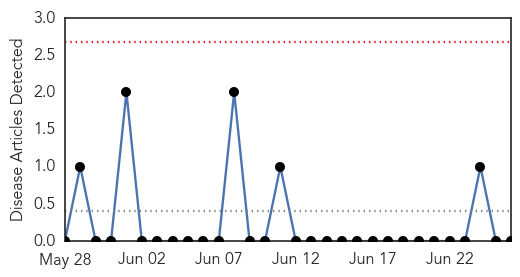
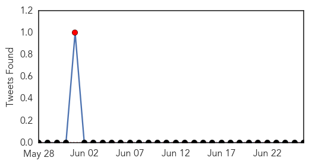

Mumps
30-Day Web Trend
0 alerts, 0 warnings

30-Day Twitter Trend
1 alerts, 0 warnings

Article Locations

Article Confidences

Top Articles:
-
No articles found for Jun 26, 2015
Top Tweets:
-
No tweets found for Jun 26, 2015
West Nile Virus
30-Day Web Trend
1 alerts, 3 warnings

30-Day Twitter Trend
3 alerts, 0 warnings

Article Locations
Article Confidences
Top Articles:
- 0.991
- West Nile virus found in Grandview mosquitoes
- 0.960
- Delaware officials report human case of West Nile Virus – FOX 29 News
- 0.896
- West Nile Virus Detected In Washington; Oklahoma Mosquito Activity Rises
- 0.833
- Rockland County Reports Season’s First West Nile Mosquitoes « CBS New York
- 0.758
- Scientist Can Discuss West Nile Virus Forecasting
- 0.573
- Area communities fighting mosquito war
Top Tweets:
-
No tweets found for Jun 26, 2015